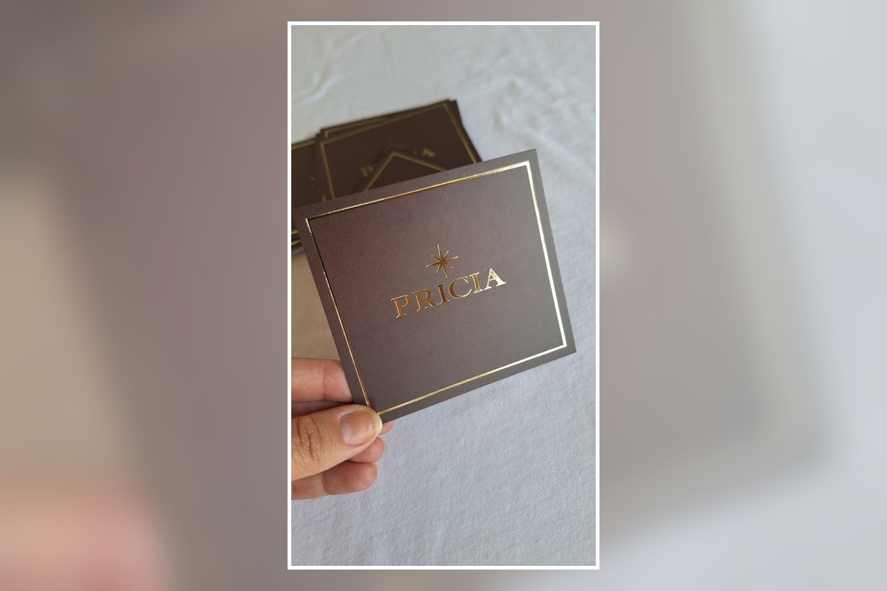

Visual sofisticado
O detalhe dourado ajuda a destacar logo, nome da marca, frases ou elementos selecionados da arte.
Destaque sua marca com um cartão personalizado de apresentação sofisticada. O acabamento dourado pode ser combinado com sua identidade visual para cartões de agradecimento, divulgação, presentes, lojas e embalagens.

O dourado cria um ponto de destaque no cartão e pode ser aplicado de acordo com a arte e o material escolhido. A composição é definida para manter boa leitura, contraste e uma apresentação profissional.
O detalhe dourado ajuda a destacar logo, nome da marca, frases ou elementos selecionados da arte.
Cores, informações, formato e acabamento são definidos de acordo com a identidade e a finalidade do pedido.
Ideal para cartões de agradecimento, divulgação, presentes, lojas, semijoias, cosméticos e embalagens.
Envie sua arte, referência ou ideia pelo WhatsApp. Avaliamos o modelo e confirmamos as opções de acabamento dourado disponíveis para o seu pedido, além de quantidade, prazo e valor.
Envie sua referência e solicite um orçamento personalizado.